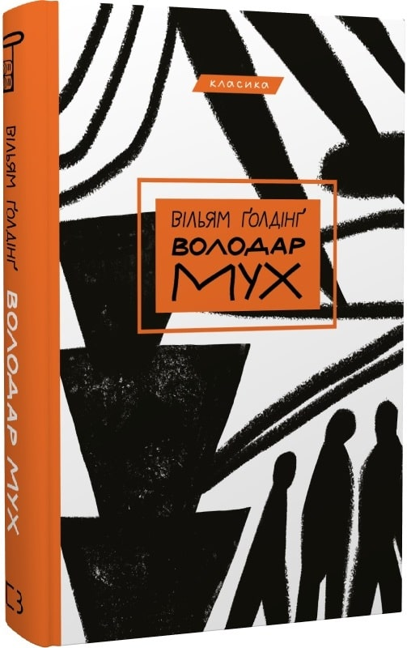
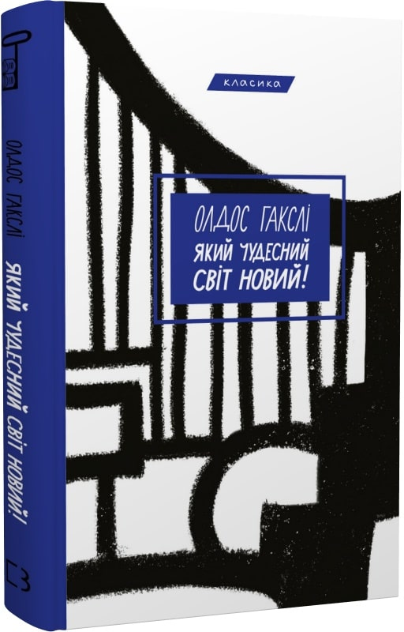
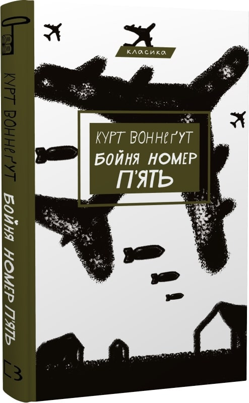

|  |
Вільям Ґолдінґ — англійський письменник, лауреат Нобелівської премії з літератури. Всесвітню славу він здобув як автор роману «Володар Мух» — справжнього шедевра світової літератури. Це роман-притча, роман-символ, роман-антиутопія... Мабуть, найжорстокіша. Внаслідок авіакатастрофи кілька дітей потрапляють на безлюдний острів, дуже схожий на райський куточок. Безмежний океан, тропічні пальми, кришталеве джерело, таємнича печера... Тут є все, крім дорослих. У маленькій громаді відразу визначаються два лідери. Починається боротьба за владу. І надто скоро діти забувають не тільки про дружбу й порядність, а навіть про людську подобу... Межа, яка відділяє людину від тварини, дуже тонка. І боятися треба не того звіра, що десь зовні. Набагато страшніший той, що всередині в кожного... |
|
|  |
Утопічне майбутнє — це світ, у якому люди перебувають під пильним контролем. Суспільство поділене на касти, кожна з яких відіграє свою роль. Усі повинні насолоджуватися установленим ладом і служити «загальному благу», а насправді — панівному режиму. Кожен, хто не хоче жити в «злагодженому» суспільстві — дикун і, відповідно, ворог. |
|
|  |
Курт Воннеґут (1922–2007) — американський письменник-фантаст. Є одним із найвагоміших американських письменників XX століття. У творчості майстерно поєднує елементи сатири, чорного гумору й наукової фантастики. Книга «Бойня №5, або Дитячий хрестовий похід» належить до переліку 100 найліпших романів усіх часів, це одна з найзначиміших у світі антивоєнних книг. Події твору розгортаються на тлі сумнозвісного бомбардування Дрездена під час Другої світової війни. Одіссея головного героя — Біллі Пілґрима — крізь час відображає безумну міфічну подорож нашого зруйнованого життя, коли ми намагаємося відшукати сенс у тому, чого боїмося найбільше. Чи зможе автор навчити нас ігнорувати жахливі часи й зосереджуватися на гарних? |
З одного боку, в гості без пляшки не підеш. А з іншого – якщо в тебе є пляшка, та на холєру в гості пертись?
Різдво 2022:
– Христос родився! Маю три вакцини, сертифікат вакцинації, негативний тест, оброблений антисептиком!
Колядувати можна?
Розмовляють дві блондинки.
– А ти знала, що квас з хліба роблять?
– Та ти шо? Тягни соковижималку!
– Отче, я хочу посповідатися.
– П’єте?
– П’ю. Але може спочатку посповідаєте мене?
Мужик не кактус, йому пити треба.
Пацан сказав – пацан зробив! Пацан не зробив – пацан пожартував!
Нехай краще в м’язах буде біль, ніж наркота і алкоголь!
Бережіть своїх батьків … Вони щиро за вас турбуються .
Часом просто хочеться побути на самоті.
Від душі душевно в душу…
Ми б’ємо сильно, а життя б’є сильніше, ніж треба.
З себе вискакувати Дуже старатися.
З’їсти собаку (вовка, муху) Набути великого досвіду в якійсь справі; грунтовно, до тонкощів вивчити
що-небудь.
За холодну воду не братися Ледарювати.
Заварити кашу Затіяти щось, що загрожує неприємними наслідками.
Заговорювати зуби Задурювати голову кому-небудь.
Закрутити веремію Наробити крику.
«Усе тече, все змінюється» (давньогрецький філософ Геракліт).
«Інші часи — інші пісні» (Нікола Буало).
«Попіл Клааса б'є в серце» (Шарль Де Костер).
«Іду на ви!» (знамените історичне послання, яке Святослав відправив хозарському кагану).
«Всякому городу — нрав і права» (Григорій Сковорода).
«Борітеся — поборете!» (слова з поеми Тараса Шевченка Кавказ).
«Лиш боротись — значить жить» (Іван Франко).
How I wonder what you are!